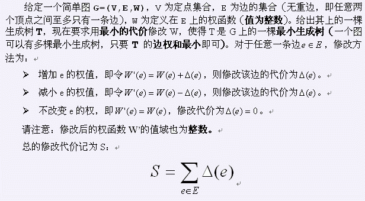

第一行为N、M，其中 表示顶点的数目， 表示边的数目。顶点的编号为1、2、3、……、N-1、N。接下来的M行，每行三个整数Ui，Vi，Wi，表示顶点Ui与Vi之间有一条边，其权值为Wi。所有的边在输入中会且仅会出现一次。再接着N-1行，每行两个整数Xi、Yi，表示顶点Xi与Yi之间的边是T的一条边。

第一行为N、M，其中 表示顶点的数目， 表示边的数目。顶点的编号为1、2、3、……、N-1、N。接下来的M行，每行三个整数Ui，Vi，Wi，表示顶点Ui与Vi之间有一条边，其权值为Wi。所有的边在输入中会且仅会出现一次。再接着N-1行，每行两个整数Xi、Yi，表示顶点Xi与Yi之间的边是T的一条边。
输出最小权值
6 9
1 2 2
1 3 2
2 3 3
3 4 3
1 5 1
2 6 3
4 5 4
4 6 7
5 6 6
1 3
2 3
3 4
4 5
4 6
8
【样例说明】
边(4,6)的权由7修改为3，代价为4
边(1,2)的权由2修改为3，代价为1
边(1,5)的权由1修改为4，代价为3
所以总代价为4+1+3=8
修改方案不唯一。 1<=n<=50,1<=m<=800,1<=wi<=1000
n-->点数..m-->边数..wi--->边权